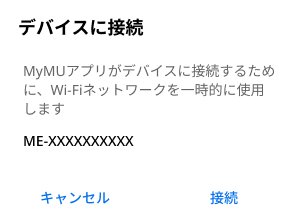
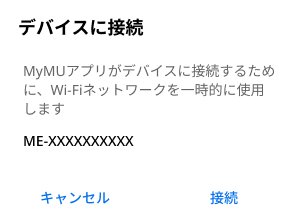
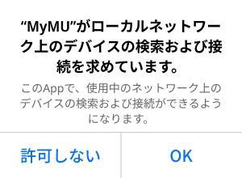

使用できる文字
半角記号は !#$%&'()*+-./:;<=>?@[]^_`{¦}~ に対応しています。ダブルクォーテーション（"）、カンマ（,）、バックスラッシュ（＼）、￥マークには対応していません。

環境センサーの初期化方法
- 初期化方法は「環境センサーの初期化方法」の画面で確認できます。
- 以下のメッセージが表示されたら「接続」をタップしてください。「キャンセル」をタップすると接続に失敗します。
 

- しばらくすると位置情報の使用許可を求めるメッセージが表示されます。「1度だけ許可」「Appの使用中は許可」あるいは「アプリの使用時のみ」「今回のみ」をタップしてください。「許可しない」をタップすると接続に失敗します。


- iOS搭載のスマートフォンでは、右のメッセージが表示されることがあります。その場合は「OK」をタップしてください。「OK」をタップしないと接続に失敗します。「許可しない」をタップした場合は、iOSのローカルネットワークの設定を変更してください。 
- 接続に失敗した場合は右のメッセージが表示されます。「閉じる」をタップして画面を閉じ手順7からやり直してください。

SSID選択画面

暗号化キーを表示する

SSIDの手動入力方法
- 「その他（手動設定）」を選択

- SSIDを入力し、「決定」をタップ
環境センサーの登録に失敗した場合
- 登録に失敗した場合は登録失敗のメッセージが表示されます。「閉じる」をタップすると対処方法を説明する画面が表示されます。

- 登録失敗のメッセージの「閉じる」をタップすると次の画面が表示されます。内容を確認して、再度登録手順を実施してください。「戻る」をタップすることで、接続手順の確認画面に戻ります。

環境センサーが別のユーザーに登録されている場合
- 環境センサーが別のユーザーに登録されている場合は次のメッセージが表示されます。「登録を続ける」をタップすることで、本環境センサーの登録が行われ、別のユーザーからは環境センサーの登録が削除されます。登録しない場合は「キャンセル」をタップします。